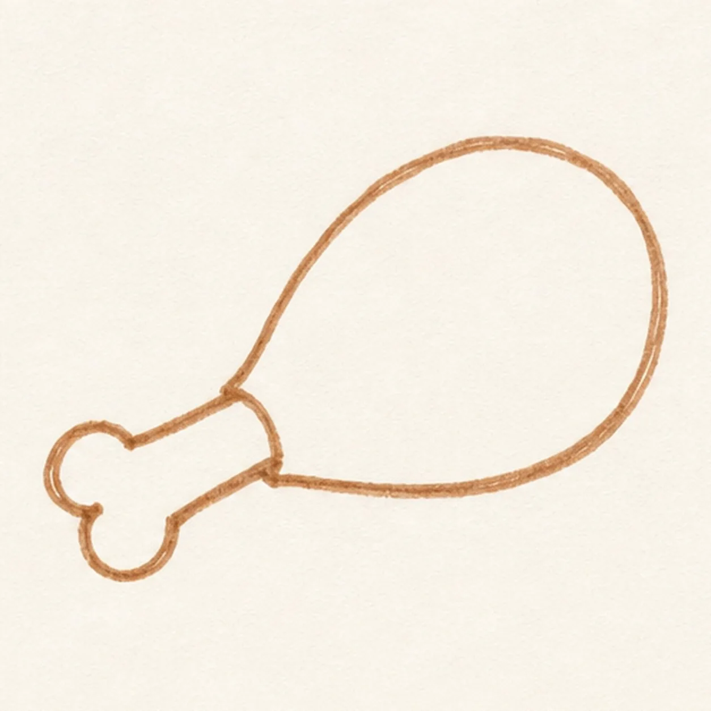
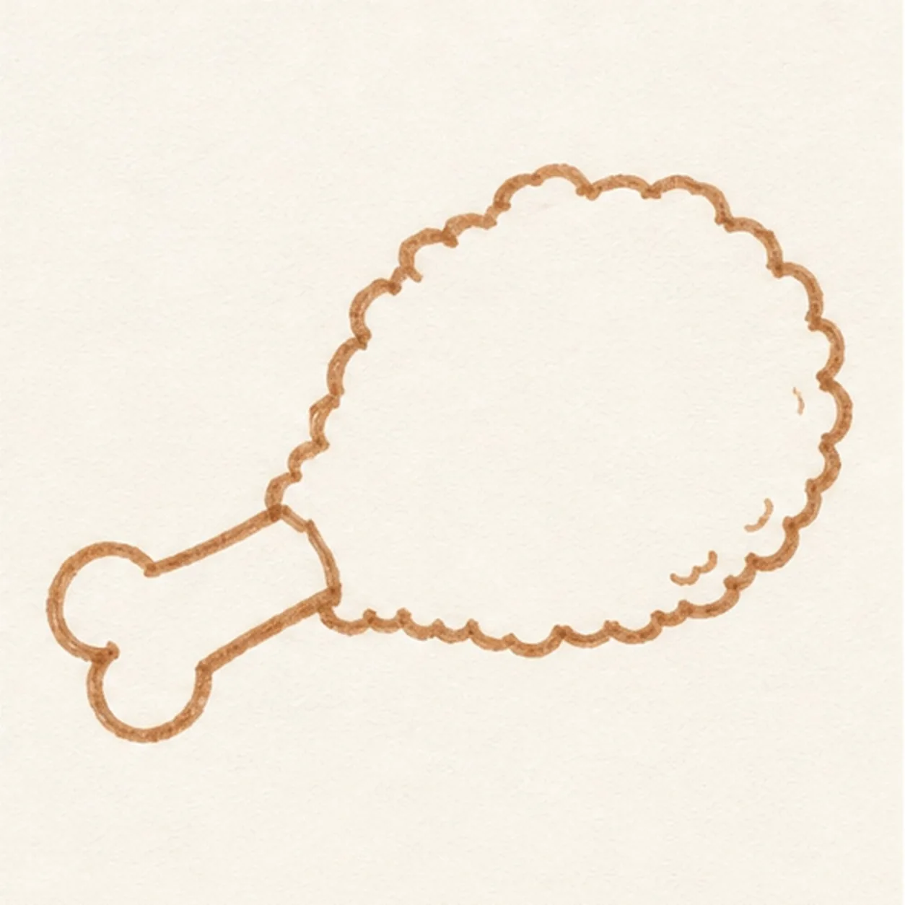
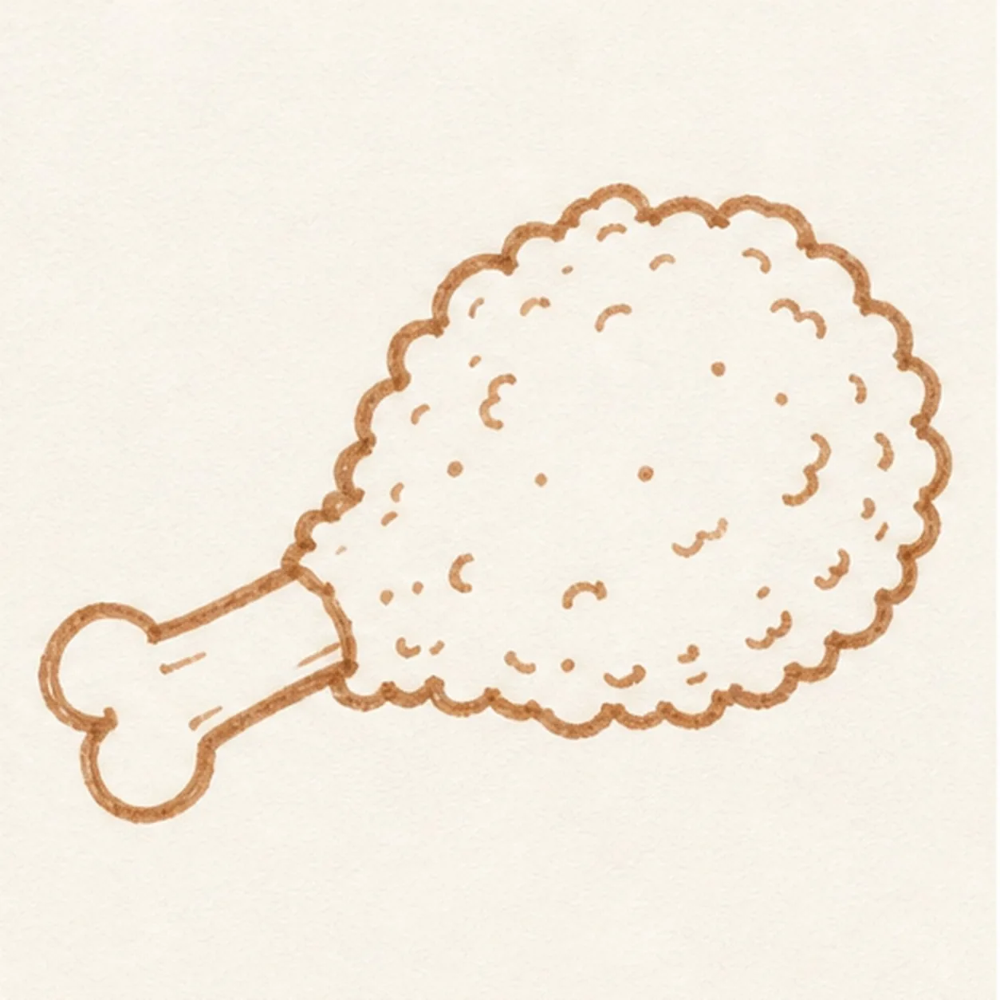
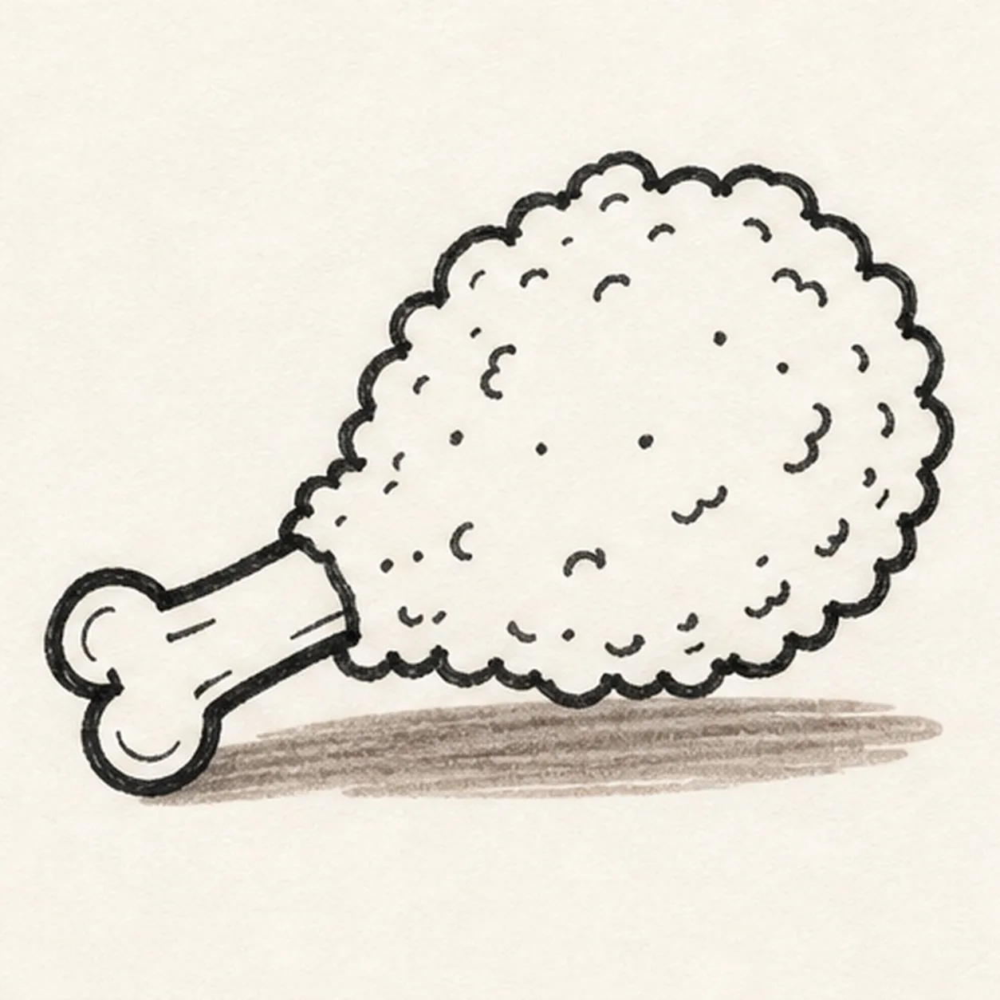
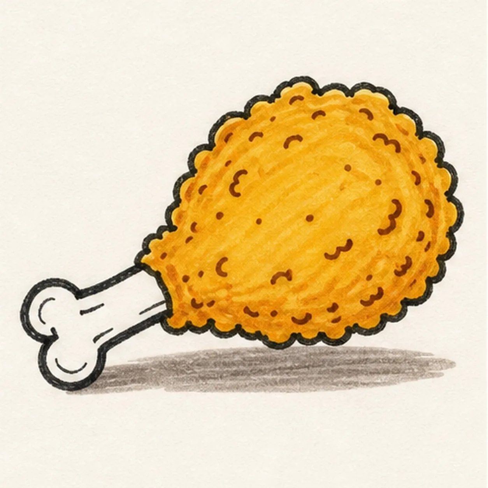

Felt-tip marker mode
Let's draw a fried chicken drumstick
Treat this as one playful practice round: sketch the idea loosely, simplify the shapes, then commit with confident marker outlines and bright fills.
-
01

Block the drumstick
Sketch a light teardrop guide for the chicken shape, then attach a short bone handle at the narrow end.
Doodle tip: Treat the first curve as a size guide, not the final crust edge. The bumpy coating comes next.
-
02

Bump the crispy edge
Replace the smooth guide with an uneven bumpy coating, then round off the bone end.
Doodle tip: Let the bumps vary in size. Perfect scallops can make the crust look like a decorative cloud.
-
03

Sprinkle the crust
Add crumb dots, short crackle dashes, and small texture marks across the existing crust.
Doodle tip: Cluster a few marks and leave open spaces. Too many specks can muddy the marker fill.
-
04

Set bone and wrapper
Add the small bone-end detail, then slide a simple paper wrapper shape behind the drumstick.
Doodle tip: Keep the wrapper light and flat. It should support the chicken without stealing attention.
-
05

Color the crispy coat
Color the crust golden orange, fill the bone pale cream, and leave a few small highlight gaps.
Doodle tip: Let the marker strokes show through the color. The streaks make the fried coating feel handmade.
-
06

Crunch up the finish
Thicken the bumpy black outline, even the existing marker fills, clarify the crumb marks, and strengthen the same wrapper shadows.
Doodle tip: Stop before adding a plate, sauce cup, face, or border. The crust, bone, crumbs, and color are enough.